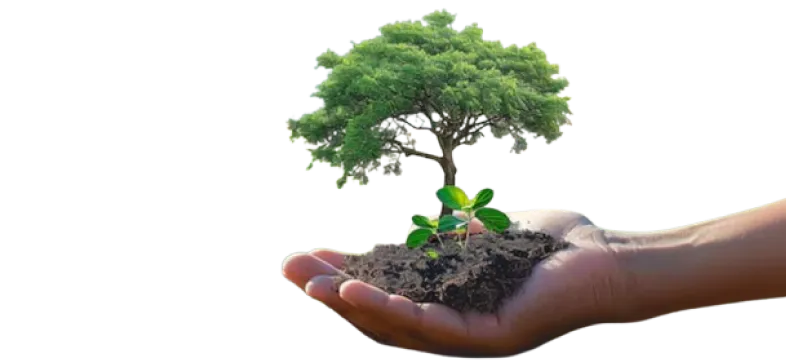

"Ça va Trai'ler" est bien plus qu'un simple festival. C’est une rencontre inédite entre le cinéma et le sport, un lieu où l'art de raconter des histoires à travers des courts-métrages se mêle à l'énergie et au dynamisme des activités sportives. Que vous soyez amateur de cinéma, passionné de sport, ou simplement curieux, cet événement vous est destiné !
Créé par une équipe de passionnés de sport et de cinéma, “Ça va trai'ler” est né de l’envie de connecter deux mondes, qui stimulent la créativité et l'énergie. L'idée est de combiner l'exploration visuelle des courts-métrages avec l'effort physique, tout en offrant aux participants une expérience riche en émotions, et en découvertes.


Notre équipe est composée de réalisateurs, athlètes et organisateurs événementiels passionnés. Ensemble, nous partageons la vision d'un festival qui unit culture et performance physique, et qui repousse les limites de l’expérience audiovisuelle en plein air. Notre équipe technique réunit des passionnés de cinéma, bénévoles et professionnels. Elle veille à garantir la meilleure expérience possible pour vous !
Participer à “Ça va trai'ler” c’est vivre une expérience nouvelle et unique. C’est l'occasion de voir des courts-métrages inspirants tout en s'engageant activement dans des activités physiques accessibles à tous. Que vous soyez amateur de trail, de cinéma ou simplement à la recherche d’une aventure différente, ce festival est fait pour vous. C’est aussi une excellente façon de booster le milieu événementiel local, autour de chez vous !
Nous avons à cœur d’organiser un festival écoresponsable. Nous utilisons des matériaux recyclés, privilégions les circuits courts pour la restauration et encourageons l’usage de transports en commun. En outre, toutes les activités et projections sont accessibles aux personnes à mobilité réduite.
